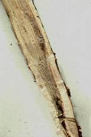
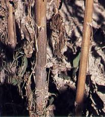
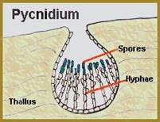

| Home |
| SUNFLOWER |
MAJOR DISEASES |
| 1. Root rot or charcoal rot |
| 2. Leaf blight |
| 3. Rust |
| 4. Head rot |
| 5. Powdery mildew |
| 6. Basal rot |
| 7. Necrosis |
| Questions |
| Download Notes |
SUNFLOWER :: MAJOR DISEASE :: ROOT ROT OR CHARCOAL ROT
Root rot or charcoal rot - Rhizoctonia bataticola(Pycnidial stage: Macrophomina phaseolina)
Symptoms
The pathogen is seed-borne and primarily causes seedling blight and collar rot in the initial stages. The grown up plants also show symptoms after flowering stage. The infected plants show drooping of leaves and death occurs in patches. The bark of the lower stem and roots shreds and are associated with a large number of sclerotia. Dark coloured, minute pycnidia also develop on the lower portion of the stem.
|  |  |
Symptoms |
|
Pathogen
The fungus produces a large number of black, round to irregular shaped sclerotia. The pycnidia are dark brown to black with an ostiole and contain numerous single celled, thin walled, hyaline and elliptical pycnidiospores.
|  |
Favourable Conditions
- Moisture stress and higher temperature favour development of the disease.
Disease cycle
The pathogen survives in soil and in infected crop residues through sclerotia and pycnidia. The pathogen is seed-borne and it serves as primary source of infection. Wind-borne conidia cause secondary spread. The soil borne sclerotia also spreads through rain splash, irrigation water and implements.
Management
- Closer planting of the seedling should be avoided.
- Optimum nutrition should be provided to maintain the plant vigour.
- Whenever the soil becomes dry and the soil temperature rises then irrigation should be provided.
- Seed treatment with Trichoderma viride formulation at 4 g/kg seed.
- In endemic areas long crop rotation should be followed.
- Treat the seeds with Carbendazim or Thiram at 2/kg
- Spot drench with Carbendazim at 500 mg/litre.